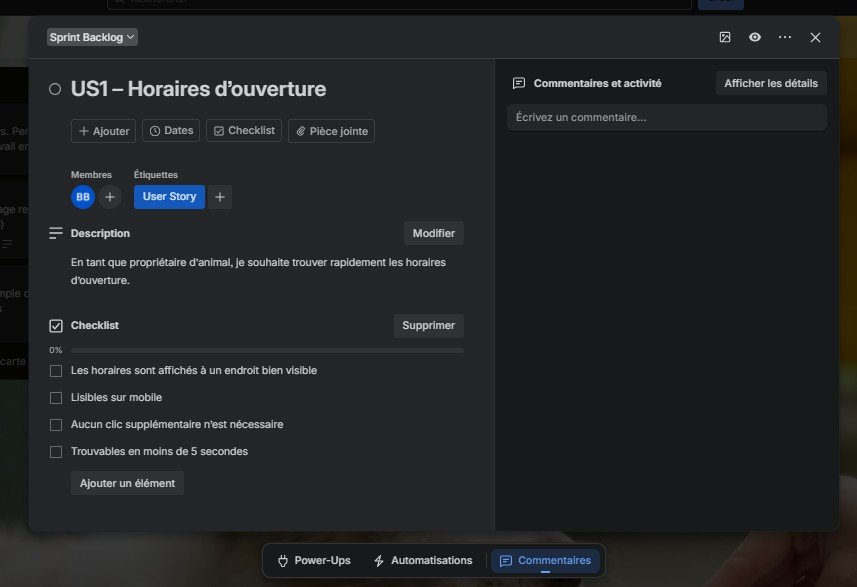
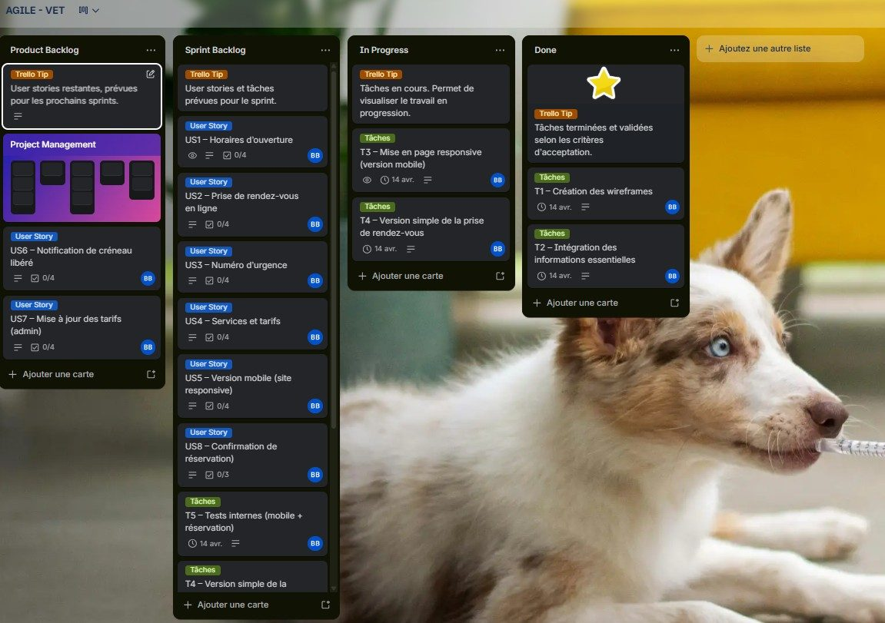
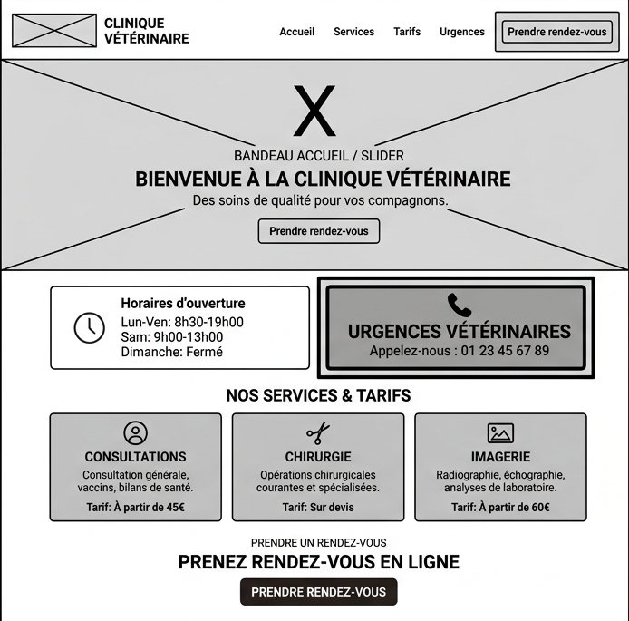

Agile-Vet: MVP planning, backlog design and a Daily Scrum simulation
How I scoped the first release of a clinic website, structured the backlog, and, as Product Owner, identified two impediments and defined the next actions.
Simulated training project. Produced individually and assessed in French for the Agile certification RS5487 (Simplon.co, 2026). Planned outcomes are marked as planned.
The scenario
A veterinary clinic's website is outdated, hard to read and unusable on a phone, and offers no online booking. Pet owners call for basic information such as opening hours, the emergency number and prices, which ties up the front desk.
- Pet owners want to find hours and the emergency number instantly, book without calling, and use a phone.
- Clinic staff want fewer routine calls, simpler appointment handling and prices that are easy to update.
- New clients need a reassuring first impression and a simple path to a first appointment.
Key decisions
The case is mostly a sequence of trade-offs. These are the ones that shaped the sprint.
| Decision | Options weighed | What I chose and why |
|---|---|---|
| Release scope | All eight stories, or the smallest set that works end to end | Six stories that give one complete journey: find information, book, get a confirmation. Early-slot alerts (US6) and self-service price editing (US7) were deferred because they are more complex to build and less important than the core journey for a first usable version. |
| Sprint Goal | A list of features, or one outcome | One outcome: a first working, responsive site with the essential information and simple booking with confirmation. It gave every task a single test: does this move the goal forward? |
| Method | Scrum, Kanban or a predictive plan | Scrum, because the client needed a usable first version quickly and some content was still unsettled. I added a work-in-progress limit of two, a Kanban practice, to keep focus and finish work before starting more. |
| Content dependency | Wait for the clinic's validated prices, or integrate provisional content | Provisional content, corrected later, so that integration was not blocked by one missing input. |
| Task breakdown | Small technical tasks, or functional blocks | Five functional blocks, each traceable to its stories and easy to present. In hindsight this made stories hard to accept one by one (see the 2026 review). |
Backlog
Eight user stories, each with acceptance criteria that can be checked rather than debated, for example the emergency number can be found in under 3 seconds and is tap-to-call on mobile.
| ID | User story (as a pet owner, unless stated) | Acceptance criteria | Release 1 |
|---|---|---|---|
| US1 | Find the opening hours quickly | Prominent; readable on mobile; no extra click; found in under 5 s | in |
| US2 | Book an appointment online | Reachable from home page or menu; slot selection; required-field checks; confirmation shown | in |
| US3 | See the emergency number | Prominent; tap-to-call; visually highlighted; found in under 3 s | in |
| US4 | See services and prices | Clear list; a price per service; mobile layout; content structured so it is easy to update | in |
| US5 | Use the site properly on mobile | Adaptive layout; hamburger menu; no overflowing text; easy-to-tap buttons | in |
| US8 | Receive a confirmation after booking | Confirmation message; date, time and contact details; error on invalid input | in |
| US6 | Be notified when an earlier slot frees up | Cancelled slot detected; email or SMS sent; date and time included; booking link works | later |
| US7 | As clinic staff, change prices myself | No technical help needed; changes immediate; consistent on all devices; confirmation shown | later |
US4 only requires prices to be well structured and easy to update. Letting clinic staff edit them without help is a separate need, US7, and was deferred.

Sprint plan
| Task | Stories served |
|---|---|
| T1 Wireframes for the home page and booking flow | US1–US5 |
| T2 Essential information: hours, emergency number, services, prices | US1, US3, US4 |
| T3 Responsive layout: hamburger menu, mobile readability | US5 |
| T4 Simple booking: form, slot choice, confirmation | US2, US8 |
| T5 Internal tests: mobile and the full booking journey | All six |
Definition of Done: operational, responsive, tested and validated against the acceptance criteria.
Mid-sprint: the board and the Daily Scrum
I set the timeline so that the assessment on 18 April 2026 fell mid-sprint, because a Daily Scrum only makes sense while work is under way.
Product Backlog 2
Sprint Backlog 7
In Progress 2 of 2
Done 2
Teal edge: user story. Ochre edge: task. In Progress is at its limit of two. Simplified from the Trello board.
The Daily Scrum served to check progress towards the Sprint Goal and adjust the plan for the next day. I structured it around what had moved, what came next and what was blocking, speaking for the fictional team and adding the Product Owner's input. Two impediments came up:
- Mobile menu (T3). It was still open how to keep the emergency number findable within seconds on a small screen, for an owner who may be under stress.
- Booking rules (T4). The available time slots and the form's error messages were not yet defined.
Both were product decisions, so I took ownership of the next actions: agree a simple mobile menu with the emergency number always visible, and clarify the booking rules with the clinic straight away. The plan for the day: finish the responsive layout (T3) while starting the booking logic (T4), within the limit of two.


Sprint Review, as planned
At sprint close, the plan was to demonstrate the home page with the essential information, the mobile version and the booking journey through to confirmation, with US6 and US7 as the focus of the next sprint. Expected benefits were fewer routine calls, faster access to critical information on mobile, and booking outside opening hours. These are planned outcomes; no product was built or measured.
Lessons
In the original assessment
Within the scenario, late validation of services and prices slowed integration, and the mobile layout needed several iterations. The lessons I drew: finalise the content before the sprint, and give each Daily a concrete objective.
2026 review: what I would do differently
- Make content readiness part of refinement. Rather than finalising all content up front, agree for each story which content it needs and list open dependencies before it enters a sprint.
- Slice stories vertically. T1 and T5 each span five or six stories, so no story could be accepted on its own before the end of the sprint. Thin end-to-end slices, such as the emergency number done end to end, make progress visible earlier.
- Make the Definition of Done testable. Name the devices tested, who accepts each item, and require every acceptance criterion to be met.
- Make progress and value measurable. Relative estimates and a simple progress view, such as a burndown, which Scrum leaves optional. For the product, one indicator per expected benefit, such as the share of appointments booked online.
- Use a shared visual board for remote ceremonies. The jury suggested a collaborative whiteboard such as Miro for running ceremonies online (oral feedback, paraphrased).
What this case shows
- Turning stakeholder needs into a prioritised backlog with checkable acceptance criteria
- Defining a minimum viable scope and defending what was left out
- Tracing every task to the stories it serves
- Treating impediments as product decisions and setting the next actions without delay
- Working on a methodological subject in professional French
The evidence covers planning and facilitation. It does not include software delivery, team performance or measured outcomes. The original French report, presentation deck, board screenshots and Daily Scrum script are available on request.